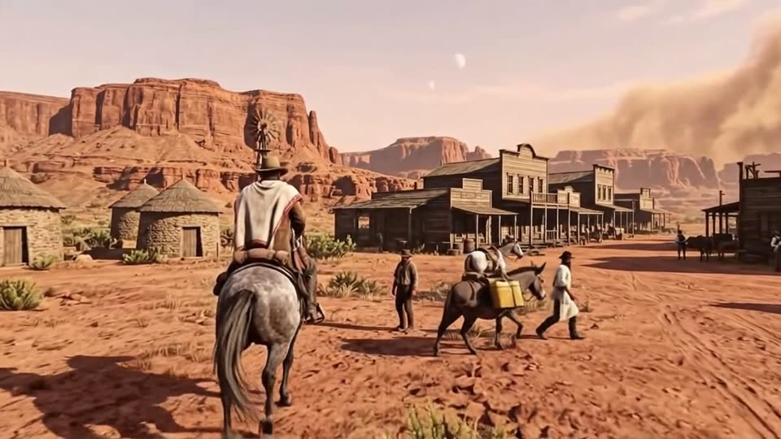
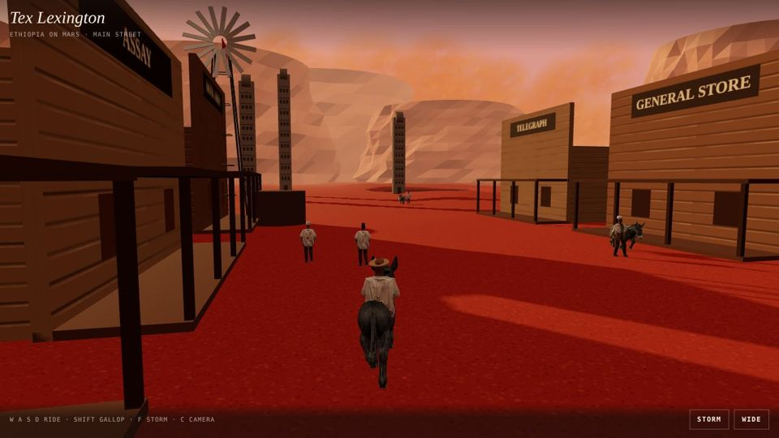
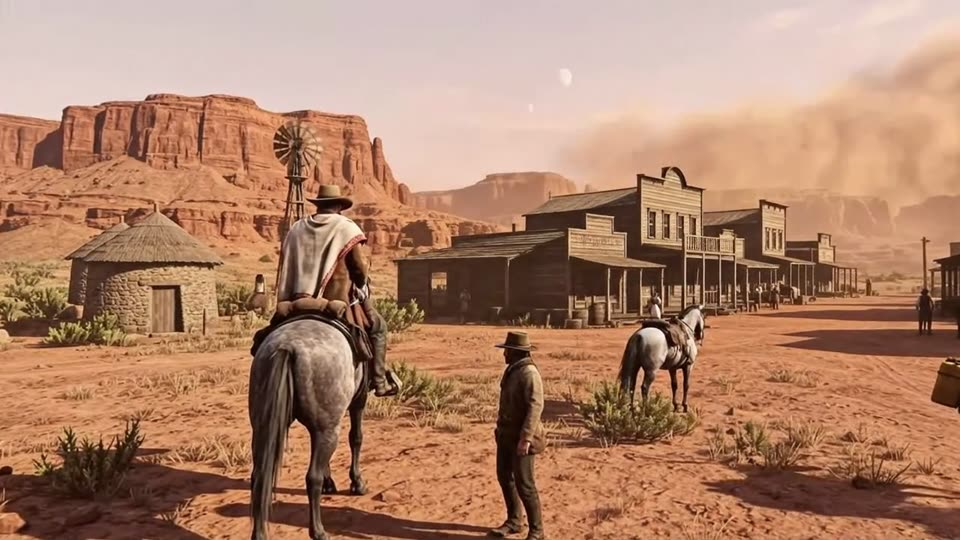
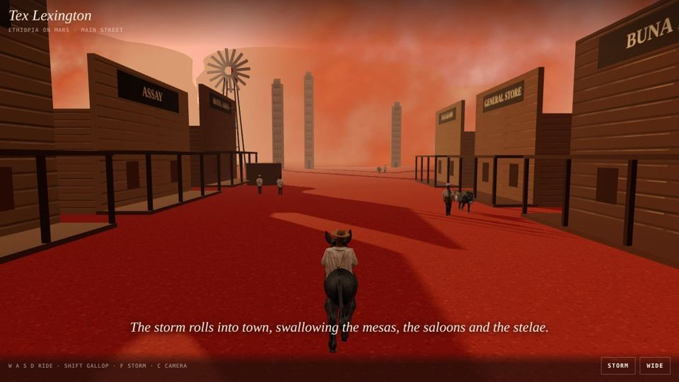
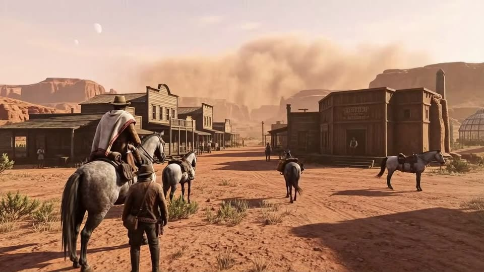
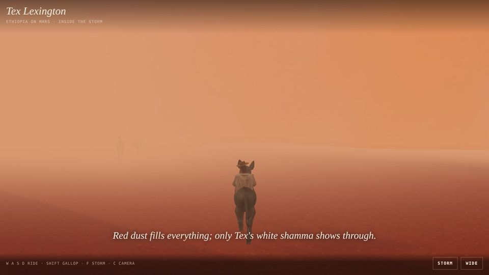
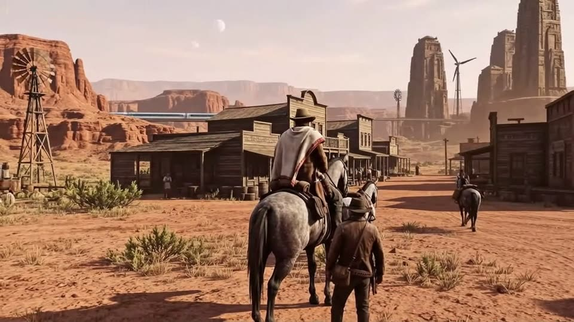

Video to game. A 40-second Genie 4 take, one session steered with W A S D, gave the blocking: a camera locked behind a rider, Texas false fronts beside Ethiopian tukuls, Aksum stelae and glass domes under a pink sky with two moons, a storm on the horizon and a future city behind the town. The game rebuilds it from make-photo's own parts and makes the storm do what the film could not.
Genie: Tex from behind on a grey horse, saloon fronts and tukuls, stelae, glass domes, the storm on the horizon. Game: the same blocking, rebuilt, with Tex on make-photo's grey donkey and the camera locked at the same height.
10 s Settlers on the street

Genie

Game
Genie drifted the settlers into Texas cowhands in brown dusters. The game holds them: Black Ethiopian men and women in white cotton shamma, two leading pack donkeys with 20 L cans.
15 s The storm

Genie

Game
In Genie the storm never left the horizon. In the game it comes up the street, and the mesas go first.
21 s Inside the storm

Genie

Game
The beat Genie could not play: red dust fills everything and only Tex's white shamma shows. The change happens here, where no one can see it.
28 s The future behind the town

GenieGame
Genie raised carved towers, wind turbines, a train line and water drones behind the frontier. The game keeps all four, and its towers stand on the cross plan of the rock churches.